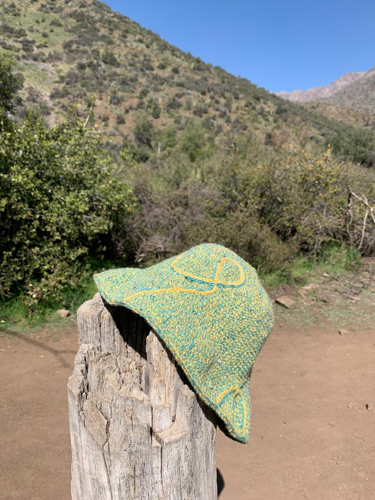

Tejer con propósito: por qué elegí Ecocitex.
Elegir hilado reciclado como una decisión ética y estética. El tejido puede convertirse en una práctica alineada con la economía circular, la reducción de residuos textiles y la creación de piezas únicas con historia. Una invitación a tejer con propósito y coherencia.
Leer más